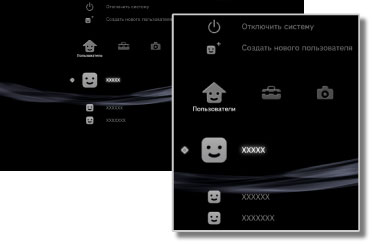

Пользователи > Категория "Пользователи"
Категория "Пользователи"
Создание пользователей или отключение системы PS3™. При создании нескольких пользователей работа с такими данными, как сохраненные данные для программного обеспечения формата PlayStation®3, отправленные и полученные сообщения в категории  (Друзья) и закладки в категории
(Друзья) и закладки в категории  (Веб-браузер), выполняется отдельно для каждого пользователя. Следующие значки отображаются в категории
(Веб-браузер), выполняется отдельно для каждого пользователя. Следующие значки отображаются в категории  (Пользователи).
(Пользователи).

 |
Отключить систему | Отключение системы PS3™. |
|---|---|---|
 |
Создать нового пользователя | Создание нового пользователя. |
 |
(имя пользователя) | Вход в систему PS3™ . |
Подсказка
Следующие типы данных, хранящихся на жестком диске, отображаются независимо от того, какой пользователь вошел в систему. При удалении данных другие пользователи также не смогут ими воспользоваться. Будьте осторожны, чтобы случайно не удалить важные данные.
- Сохраненные данные для программного обеспечения формата PlayStation®2/PlayStation®
- Игры, отображаемые в разделе
 (Игра)
(Игра) - Видеофайлы, отображаемые в категории
 (Видео)
(Видео) - Музыкальные файлы, отображаемые в категории
 (Музыка)
(Музыка) - Файлы изображений, отображаемые в категории
 (Фото)
(Фото)
Примечания
- В системе PS3™ некоторое программное обеспечение формата PlayStation®2 и PlayStation® может воспроизводиться не так, как в системах PlayStation®2 или PlayStation®, или вообще не работать.
- В некоторых системах PS3™ программное обеспечение формата PlayStation®2 не воспроизводится. Подробнее см. в разделе [Типы воспроизводимых дисков], на региональном веб-сайте SCE или в документации к системе PS3™.